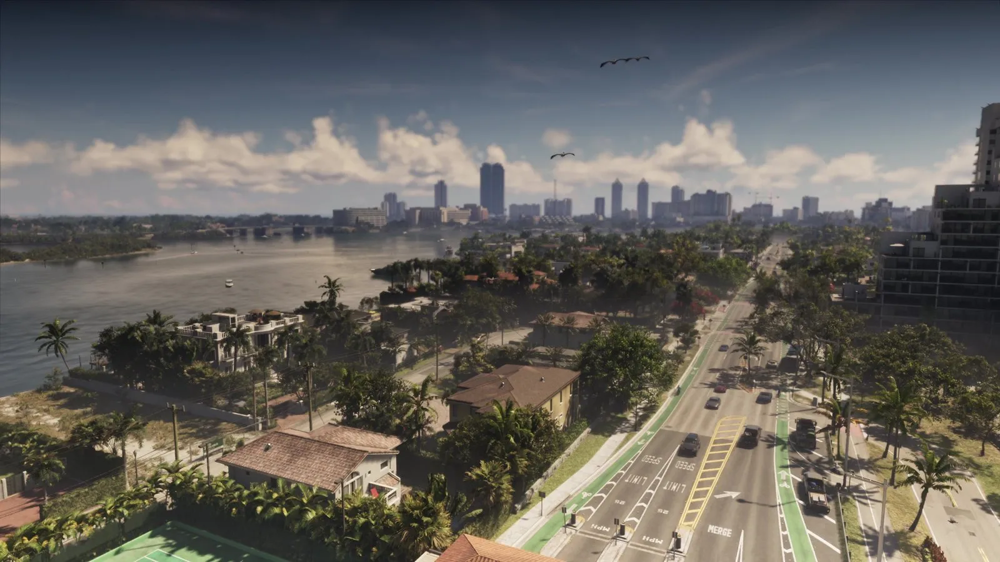
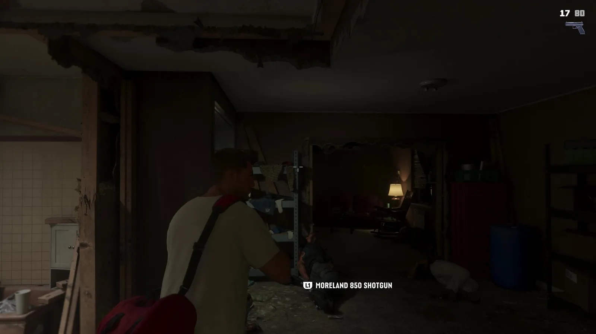
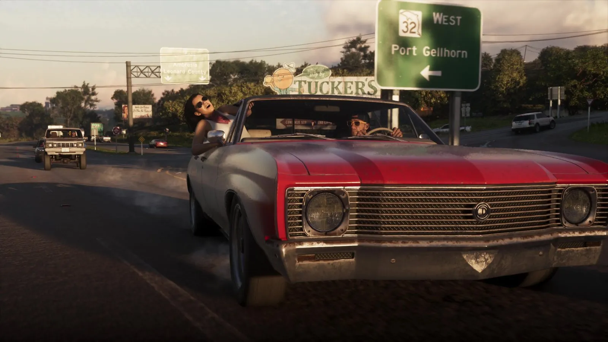
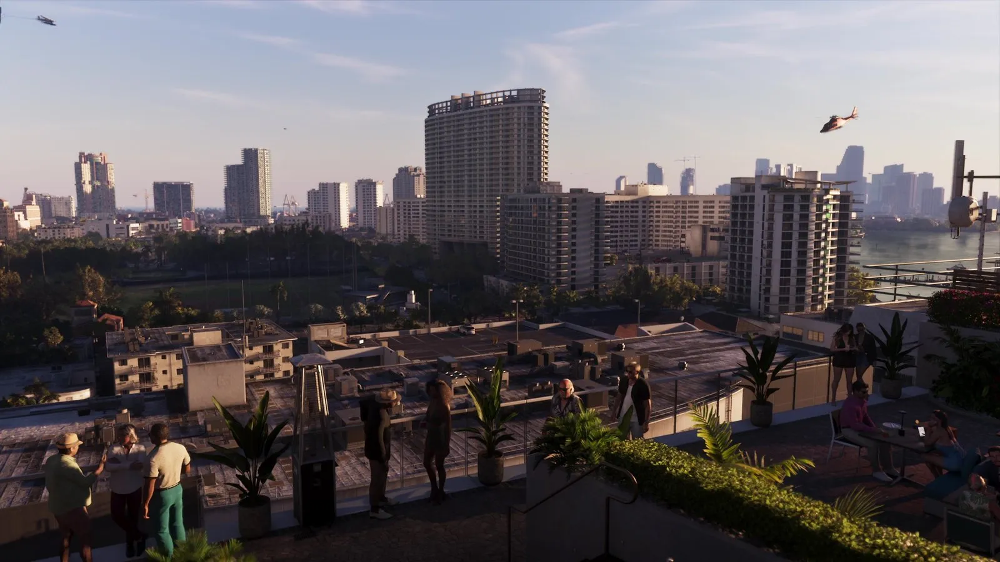
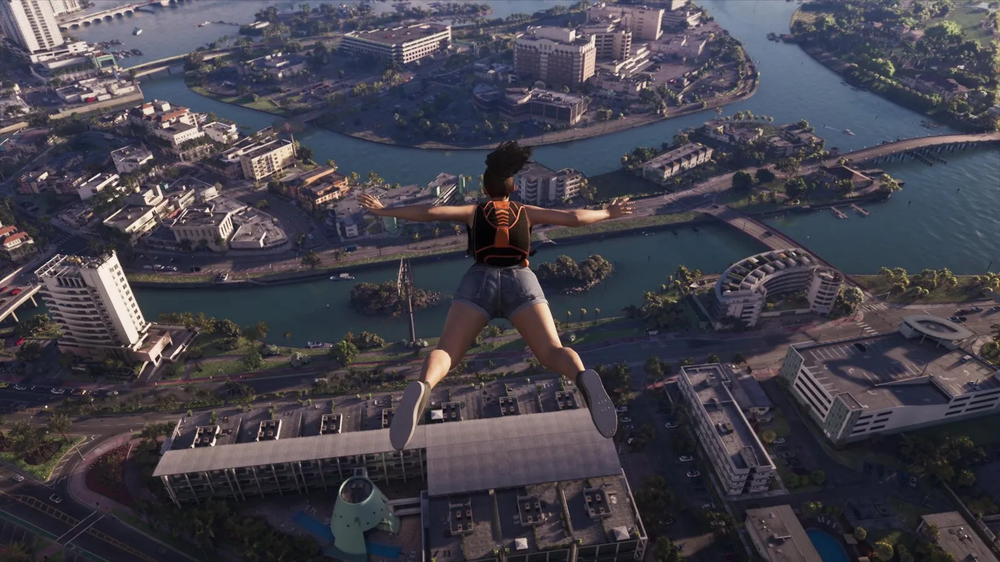
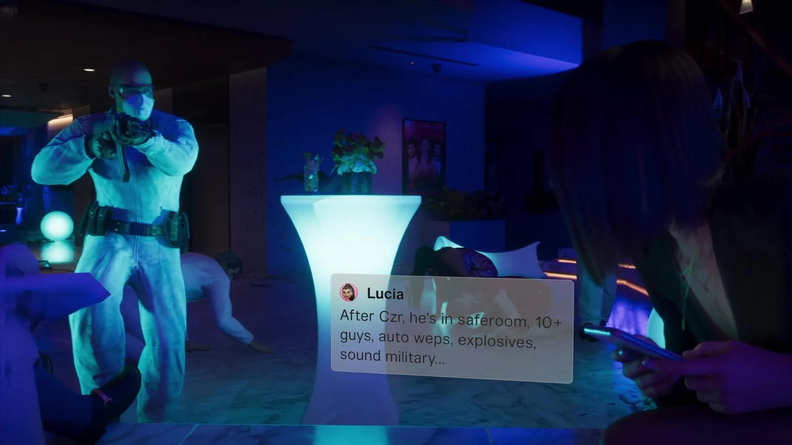

«Расширенный показ» GTA 6: что показали за 26 минут — с таймкодами
Опубликовано:

- «Grand Theft Auto VI: An Extended Look» вышел 27 августа 2026 года и длится 26 минут 48 секунд.
- Премьера прошла на Netflix, затем ролик появился на YouTube и сайте Rockstar.
- Финальная плашка ролика: «Captured on PS5» — всё снято на PlayStation 5.
- Мы разобрали видео кадр за кадром: из 804 кадров оставили 594 чётких.
Что это за видео
Трейлеры длятся по две-три минуты и показывают кино. «Расширенный показ» — это почти полчаса того, как игра выглядит в руках: с интерфейсом, подсказками кнопок, мини-картой и звёздами розыска. Для тех, кто хочет понять, как будет играться GTA 6, это главный официальный источник до релиза.
Ниже — видео по минутам. Таймкоды — по нашей нарезке (кадр каждые 2 секунды), подписи — только то, что реально видно на экране. Где мы что-то предполагаем, так и написано.
00:00–05:52 · Ночной налёт
Видео начинается без заставки: ночь, Джейсон и Лусия идут к облезлому жилому дому. У входа — компания местных, внутри — исписанные граффити коридоры, лифт с красными дверями и квартира, где на столе под лампой фасуют что-то белое люди в масках и перчатках. Разговор, звонок на телефон — и дальше перестрелка по коридорам с видом из-за плеча. На экране впервые появляется интерфейс: полоски здоровья и патроны в углу.

На отметке 06:00 — титр «Rockstar Games presents» и логотип VI. Всё, что было до него, — пролог.
06:04–06:10 · Дорога через Ambrosia
День, парковка у кубинского магазина с огромной фреской — белоголовый орлан на фоне флага. Джейсон подходит к старому красному седану, и на экране две подсказки: «Slim Jim» и «Smash Window». Как устроен угон — в разборе мифа Миф: в GTA 6 можно угнать любую машину.

Посмотрите на номер трассы на указателе: цифра 32 вписана в силуэт штата. Это точная копия реальных флоридских дорожных знаков — номера дорог штата во Флориде рисуют внутри контура самой Флориды. Rockstar заменила контур на Леониду, но саму традицию сохранила.
06:20–09:30 · Один день в Вайс-Сити
Розовая квартира с обоями в фламинго, холодильник с магнитами (его мы разобрали отдельно — Разбор кадра: что лежит в холодильнике в Вайс-Сити), телевизор с рекламой: дикие животные в лесу, летающая куриная ножка и бургер из стопки ветчины. Потом — красный кабриолет, выезд из-под дома и долгая поездка по улицам: пальмы, многоэтажки, стройки, мосты, мини-карта в углу.
Около 09:00 — короткие уличные эпизоды: мотель, заброшенный дом, самодельный ринг на заднем дворе, где двое устраивают реслинг.
09:30–12:10 · Крыша, свидание, ограбление
Джейсон в тёмной рубашке и девушка в розовом платье поднимаются на лифте в бар на крыше — на стене вывеска Effluvia. Столики, воздушные шары, вид на город. Разговор за столом с парой постарше заканчивается сценой на краю крыши. Потом — сцена с камерами наблюдения в тёмной комнате.
С 11:30 — ограбление магазина вдвоём: банданы на лицах, прилавки, выход с оружием на парковку. Как в GTA 6 устроены маски и инвентарь — в сравнении Оружие и снаряжение в GTA 5 и GTA 6: карманы без дна закончились.
12:16–16:40 · Налёт и погоня
Вид с крыши на город с вертолётами, долгая поездка по шоссе 404 East вдоль порта. В машине — Джейсон, Лусия и мужчина в очках и шейном платке (внешне похож на Рауля Баутисту — наша догадка). Банданы, автомат — и уличная перестрелка с полицией: патрульные машины переворачиваются, в небе вертолёт, в углу — звёзды розыска. Машину сжигают на крытой парковке и пересаживаются в бордовый фургон.

17:10–19:04 · Чем заняться в Леониде
Самая плотная часть видео — нарезка занятий по 2–4 секунды: аэроглиссер, спортзал, прыжок с пирса, погружение, бинокль, каяк, клуб, кольцевая гонка, ломбард, ограбление ювелирного, мотоцикл, селфи, пляж, тир, мотокросс и прыжок с парашютом над Вайс-Сити. Многие места и занятия из видео мы уже сравнили с реальностью — все сравнения GTA 6 и реальной жизни.

19:08–25:40 · Аэропорт, клуб и этаж 26
Лаунж аэропорта с видом на взлётную полосу, ночной выход к частному самолёту, поездка по ночному городу. Дальше — клуб: вывеска Megamundo, красная дорожка, вечеринка у бассейна. И финальный эпизод — вечеринка в небоскрёбе, лифт, тёмный офисный этаж с табличкой «Floor 26», перестрелка и сообщения от Лусии на экране.

Сообщения выводятся поверх игры, как уведомления на телефоне, — сюжетная информация приходит, не останавливая действие.
25:46–26:48 · Финал
Короткий монтаж: ночной город с высоты, бассейн на террасе небоскрёба, рыбалка с лодки, бар, машины на сходке, закат над Вайс-Сити. Затем логотип, плашка «Captured on PS5» и дата — 19 ноября 2026.
Источники: Rockstar Games — «Grand Theft Auto VI: An Extended Look» (27.08.2026, 26:48, rockstargames.com/VI/media/videos); Engadget (премьера на Netflix); наша покадровая нарезка.